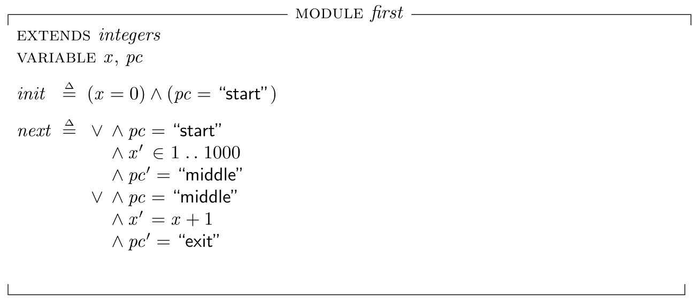
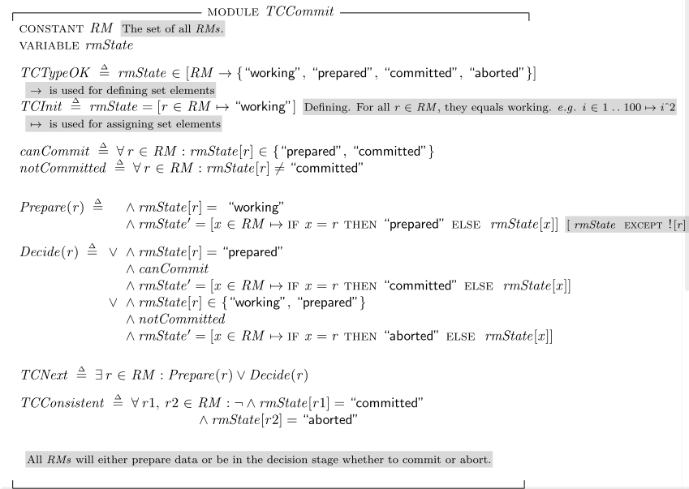

working state of RM. <2024-08-26 সোম>
Let us write our first program after installing TLA+ toolbox and opening the toolbox. We try to write the following C code segment in TLA+.
void main(){
int x;
x = someNumber();
x = x+1;
}To write it into TLA+, 
And the ASCII version for it is:
------------------------------- MODULE first -------------------------------
EXTENDS integers
VARIABLE x, pc
init == (x=0) /\ (pc = "start")
next == \/ /\ pc = "start"
/\ x' \in 1..1000
/\ pc' = "middle"
\/ /\ pc = "middle"
/\ x' = x + 1
/\ pc' = "exit"
=============================================================================
\* Modification History
\* Last modified Mon Aug 26 20:42:38 BDT 2024 by abhijit
\* Created Mon Aug 26 20:15:57 BDT 2024 by abhijit
It is interesting how many different solution the invariants bigjar /= 4 can come up with!
------------------------------ MODULE diehard ------------------------------
EXTENDS Integers
VARIABLES bigjar, smalljar
TypeOK == bigjar \in 0..5 /\ smalljar \in 0..3
Init == bigjar = 0 /\ smalljar = 0
BigToSmall == IF bigjar + smalljar <= 3
THEN
/\ smalljar' = bigjar + smalljar
/\ bigjar' = 0
ELSE
/\ bigjar' = bigjar - (3-smalljar)
/\ smalljar' = 3
SmallToBig == IF bigjar + smalljar <= 5
THEN
/\ bigjar' = bigjar + smalljar
/\ smalljar' = 0
ELSE
/\ smalljar' = smalljar - (5-bigjar)
/\ bigjar' = 5
EmptySmall == smalljar' = 0 /\ bigjar' = bigjar
EmptyBig == bigjar' = 0 /\ smalljar' = smalljar
FillSmall == smalljar' = 3 /\ bigjar' = bigjar
FillBig == bigjar' = 5 /\ smalljar' = smalljar
Next == BigToSmall \/ SmallToBig \/ EmptySmall \/ EmptyBig \/ FillSmall \/ FillBig
=============================================================================
A marriage or love consists of the followings steps (Hey, i won't know about it. This is what the books says >:3
This wedding can be compared to a database transaction. A transactions can commit if all resource managers (RM) are prepared to commit and is aborted otherwise. However, the unsure state is usually called working state of RM. 
Now let us write a spec for it.
In TLA+, every value is a set. Even 42 and "abc" are sets. But TLA+ does not know what their elements are. So it can't evaluate 42 "abc" as True or False.
rmState is an array indexed by RMs. So rmState[r] is the state of RM r.
In TLA+, arrays are functions. So array is defined as [domain -> range]. e.g. [rmState ∈ {"working", "prepared", "committed", "aborted"}].
Some harder definitions of functions/array can be: rmState = [r ∈ RM → "working"]. Note that we use |-> symbol since we are assigning value.
Similar to above [variable ∈ set → expression] notation, we can write [i ∈ 1..42 → i2]
canCommit: One can commit if all RMs are already committed or prepared to commit.
notCommitted: RM r can abort only when no other RM is committed.
The final code is: 
What happens if RM fails?